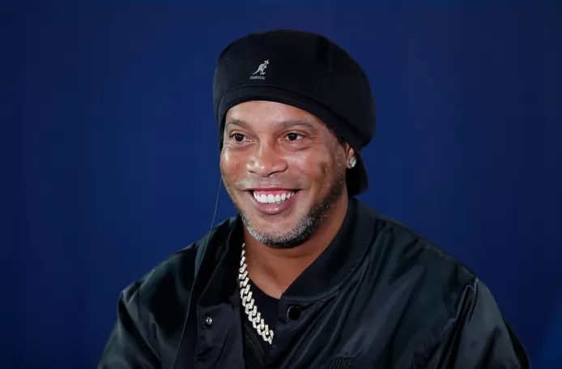

<!DOCTYPE html>
<html lang="en">
<head>
    <meta charset="UTF-8">
    <meta http-equiv="X-UA-Compatible" content="IE=edge">
    <meta name="viewport" content="width=device-width, initial-scale=1.0">
    <title>Document</title>
</head>
<body>
    
</body>
</html>
<body>
    <header>
        
        <h1>
        Ronaldinho volgende week in België voor galamatch tussen AA Gent en Standard, ook Mido, Lombaerts en Van Damme spelen mee
    </h1>
    <h2>Ronaldinho (42) is volgende week woensdag in België te bewonderen. Het Braziliaanse voetbalicoon zal meespelen tijdens een galamatch tussen AA Gent en Standard. Ook de Egyptenaar Mido, Nicolas Lombaerts en Jelle Van Damme tekenen present.
    </h2>
    Ronaldinho zakt volgende woensdag 21 september naar Gent af naar aanleiding van de Circus Cup, dat een galawedstrijd wordt tussen de Buffalo’s en de Rouches. Beide clubs worden gesponsord door Circus, een (sport)weddenschappenmerk. En laat nu net Ronaldinho het internationale gezicht van Circus zijn. De Braziliaan zal tijdens elke helft 20 minuten meespelen en zowel het shirt van AA Gent als Standard dragen. De match start om 19u30.

<p>En Ronaldinho kijkt ernaar uit, zo laat hij weten in een persbericht. “In mijn carrière heb ik nooit in België of tegen een Belgische club gespeeld. Twintig jaar geleden was ik er op het WK in Japan wel bij in de achtste finale tegen de Rode Duivels. Ik kijk er dus naar uit om de Belgische fans te ontmoeten. De Circus Cup wordt een bijzonder evenement en we gaan er alles aan doen om de supporters een geweldige avond te bezorgen.”</p>


<p>Ronaldinho krijgt het gezelschap van enkele bekende ex-spelers van AA Gent en Standard. Zo wordt het team van de Buffalo’s aangevuld met onder meer oud-Rode Duivels Gunther Schepens en Nicolas Lombaerts, Danijel Milicevic en … de Egyptenaar Mido. Die speelde na AA Gent ook voor Ajax, AS Roma, Olympique Marseille en Tottenham. Hein Vanhaezebrouck coacht de ploeg. De Rouches kunnen van hun kant rekenen op onder meer Jelle Van Damme, Jean-François Gillet, Mehdi Carcela, Paul-José Mpoku, Jonathan Legear en de Braziliaan Edmilson Sr.</p>

<p>Gunther Schepens, die kapitein wordt van het Gentse team, is opgetogen: “Toen ze mij vroegen om kapitein te zijn van ons Legends Team voelde ik mij vereerd. De talloze positieve reacties van ex-spelers brachten fantastische herinneringen naar boven. Ik kijk er enorm naar uit het terrein te delen met zoveel klasse, want alleen maar fantastische namen. Iedereen meer dan welkom!”</p>

</header>
<a href="https://www.hln.be/champions-league/de-energie-efficientste-spits-ter-wereld-hoe-spaarzame-erling-haaland-er-toch-in-slaagt-alle-records-te-verpulveren-br~ad772832/">De energie-efficiëntste spits ter wereld: hoe spaarzame Erling Haaland er toch in slaagt alle records te verpulveren</a>

<p><a href="https://www.youtube.com/watch?v=o1diW_2W-cM">Ronaldinho best moments</a></p>
</body>